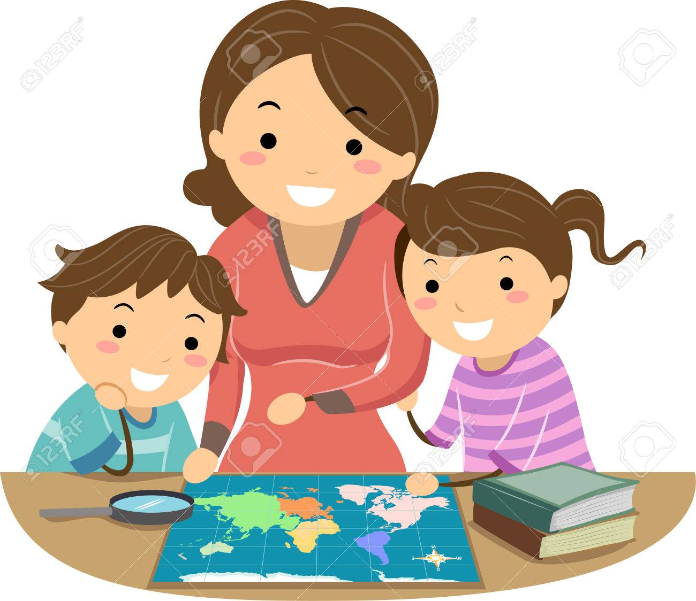

Some representative placeholder content for the first slide.
Second slide label
Some representative placeholder content for the second slide.

Third slide label
Some representative placeholder content for the third slide.
El papel clave de las familias en la educación
Las familias son una pieza importante en la comunidad educativa, pero para que la participación sea posible
es necesario que ellas realmente quieran intervenir en el proyecto educativo, en las actividades, en las
diferentes propuestas que puedan surgir. Un punto importante es la motivación que impulsará a la participación.
Y para que haya motivación las propuestas deben surgir de un interés común, de una necesidad real o de una
actividad atractiva para todos.
Un elemento importante dentro de la motivación es que las familias sepan cómo y cuándo participarán.
Para ello es necesario información, comunicación y formación.
Es decir, la participación responsable requiere estar formado e informado y esto supone:
-Tener estrecho contacto con las familias del alumnado.
-Estar en común acuerdo con el equipo directivo del centro y los docentes.
-Tener la posibilidad de plantear ideas y experiencias.
-Crear espacios para intercambiar opiniones.
-Buscar juntos soluciones y mejoras en la gestión del Centro.
Los principios de la Palabra de Dios han de inculcarse en la vida del hogar y de la escuela.
Si los padres comprendieran plenamente su deber de someterse a la voluntad revelada del Señor, serían sabios
consejeros en nuestras escuelas y en asuntos de educación, pues su experiencia en la enseñanza en el hogar
les enseñaría la forma de precaver contra las tentaciones que asaltan a niños y a jóvenes. Los maestros y
los padres así llegarían a ser colaboradores con Dios en la obra de educar a la juventud para el cielo.
(Elena de White, Carta 356, 1907).
3 TIPOS DE PARTICIPACIÓN:
-Participación como Espectador:
El centro prepara eventos para que las familias disfruten. Implica también la asistencia a
actividades lúdicas preparadas por la institución en general o por el docente en el aula.
Ejemplos: Fiestas de educación física, actos patrios, etc., las familias asumen un papel de espectadores.
-Participación como Informador
El centro mantiene un feedback positivo con las familias. Es necesario una comunicación asertiva de todas las
partes: administración, docente y familia. Cada centro educativo debe ser conocido por los padres, gestionando
una
política de puertas abiertas. Debemos recordar que se valora y aprecia aquello que se conoce. Por eso es
importante
proponer canales de comunicación fluidos; por ejemplo disponibilidad de los docentes, etc.
Ejemplos:
Desde el centro: Cuando se realiza algún cambio que involucre a los padres, como puede ser un cambio en la fecha
de un viaje, etc.
Desde la familia: Cambios familiares, separación de los padres, viaje por mucho tiempo de uno de los padres,
etc.
-Participación como Consultor
El centro consulta a las familias sobre temas que son de interés para ambos, y conocer la idea de los hogares
nos permite ver diferentes puntos de vistas. Por eso es importante que los padres participen en comisiones de
trabajo.
Ejemplos:
Desde el centro: Temas en que a los padres les gustaría recibir orientación, organización de escuelas para
padres, cursos, etc.
Desde la familia: La institución tiene la posibilidad de escuchar opiniones y vivencias de los padres.
Sugerencias que pueden ser tenidas en cuenta si es que la gestión administrativa las considera válidas y que no
afecten la
misión,la visión ni la filosofía de nuestras instituciones.